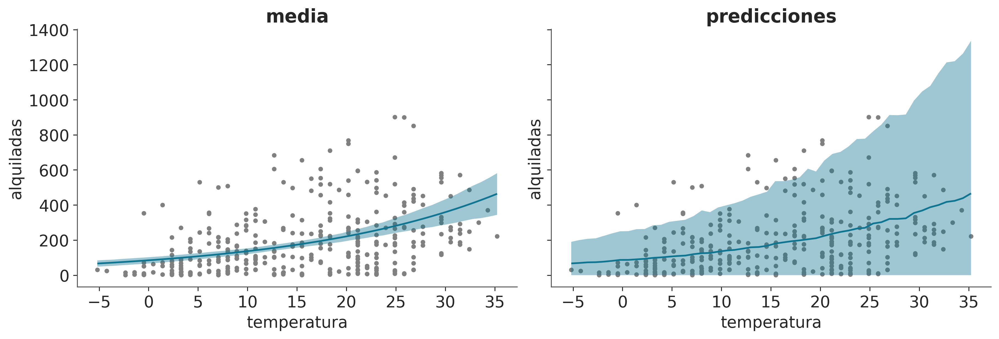
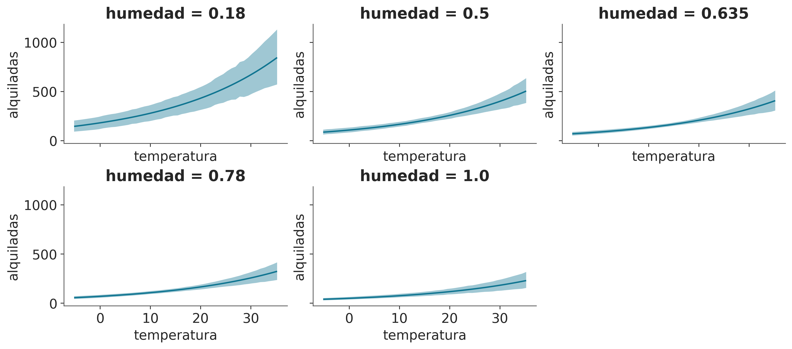
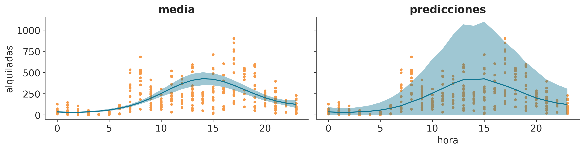
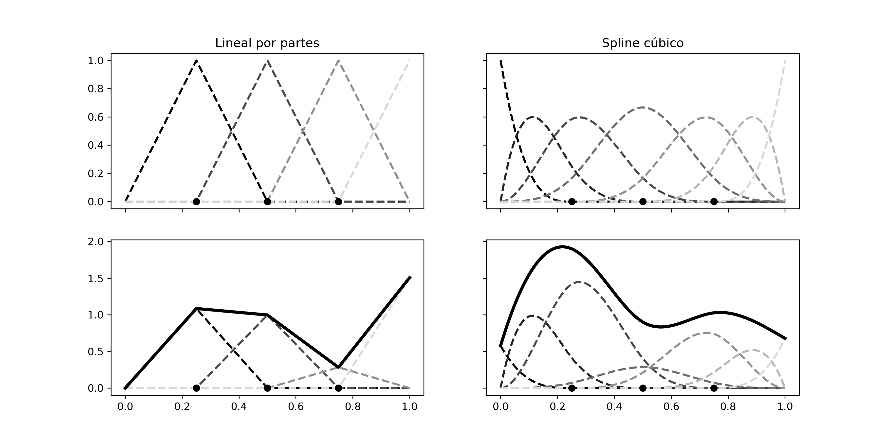
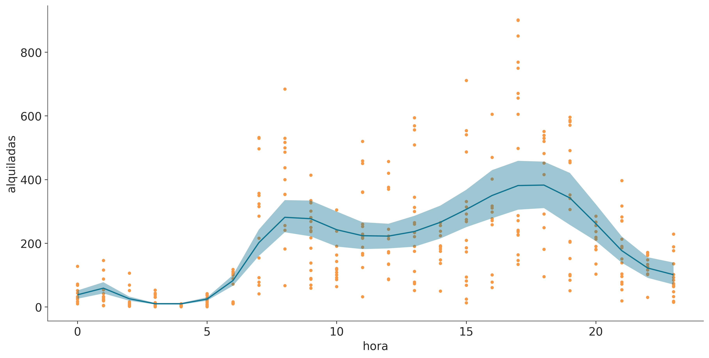
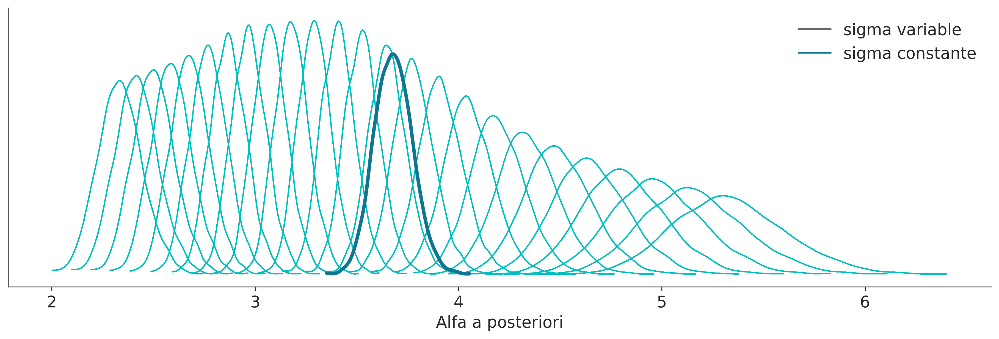
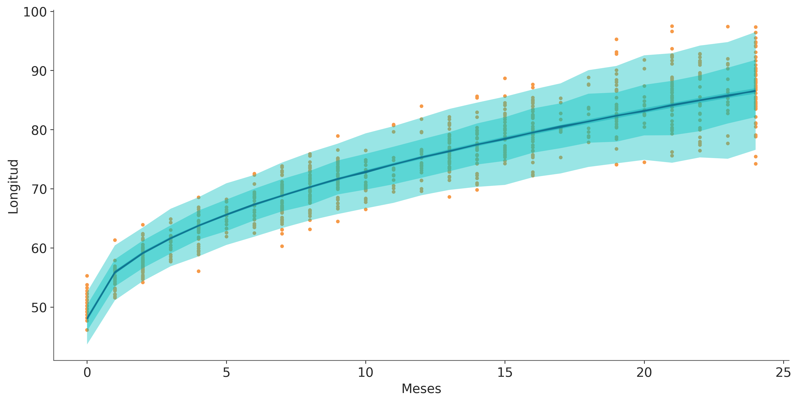
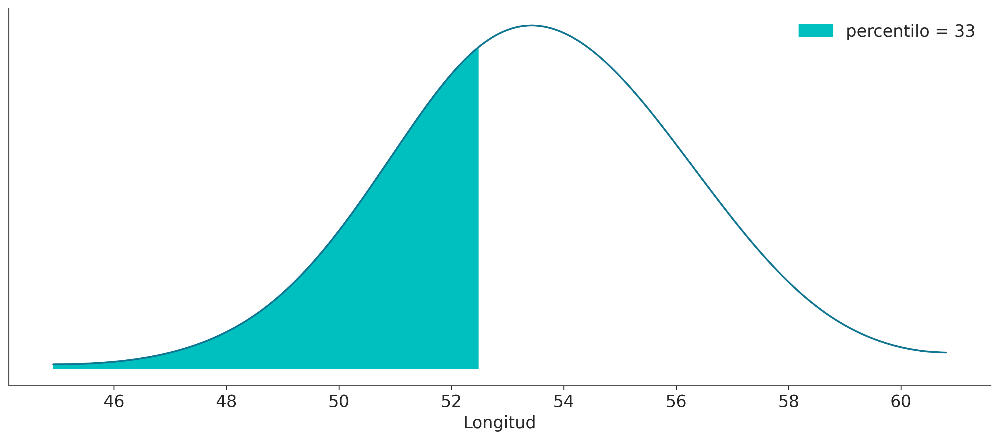
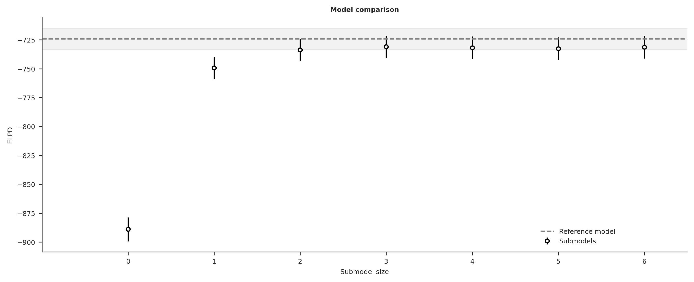

7 Regresión lineal con Bambi
A good tool improves the way you work. A great tool improves the way you think. -Jeff Duntemann
En el Capítulo anterior describimos los ingredientes básicos de los modelos de regresión lineal y cómo generalizarlos para que se ajusten mejor a nuestras necesidades. En este capítulo, seguiremos aprendiendo sobre modelos lineales, pero esta vez trabajaremos con Bambi, una interfaz de construcción de modelos bayesianos de alto nivel escrita sobre PyMC. Bambi está diseñado para que sea extremadamente fácil ajustar modelos lineales, incluidos los jerárquicos. Veremos que el dominio de Bambi es en realidad más completo que los simples modelos lineales. En este capítulo vamos a aprender sobre:
- Cómo usar Bambi para construir y ajustar modelos
- Cómo analizar resultados con Bambi
- Regresión polinómica y splines
- Modelos distributivos
- Predictores categóricos
- Interacciones
- Selección de variables con Kulprit
7.1 Una sintaxis para gobernarlos a todos
PyMC tiene una sintaxis muy simple y expresiva, que nos permite construir modelos arbitrarios, esta capacidad puede ser vista como una bendición, pero también como una carga. Bambi, en cambio, se centra en modelos de regresión; esta restricción conduce a una sintaxis más focalizada y características que serían difíciles de implementar en paquetes más generales.
Bambi utiliza una sintaxis de fórmula de Wilkinson similar a la utilizada por muchos paquetes de R como nlme, lme4 o brms. Supongamos que tenemos un DataFrame como el siguiente:
SIZE = 117
datos = pd.DataFrame(
{
"y": np.random.normal(size=SIZE),
"x": np.random.normal(size=SIZE),
"z": np.random.normal(size=SIZE),
"g": ["Group A", "Group B", "Group C"] * 39,
}
)
datos.head()| y | x | z | g | |
|---|---|---|---|---|
| 0 | 0.754899 | -0.632978 | 1.127906 | Group A |
| 1 | 1.430386 | -0.311282 | 0.450401 | Group B |
| 2 | -1.439206 | 0.646127 | -1.427421 | Group C |
| 3 | 0.919614 | -0.408645 | -1.658352 | Group A |
| 4 | -1.617014 | -0.930976 | -0.090931 | Group B |
Usando estos datos queremos construir un modelo lineal que prediga y a partir de x. Usando PyMC haríamos algo como:
with pm.Model() as lm:
Intercept = pm.Normal("Intercept", 0, 1)
x = pm.Normal("x", 0, 1)
y_sigma = pm.HalfNormal("sigma", 1)
y_mean = Intercept + x * data["x"]
y = pm.Normal("y", y_mean, y_sigma, observed=data["y"])Usando la sintaxis de Bambi, podemos escribir el mismo modelo como:
En el lado izquierdo de ~ tenemos la variable dependiente y en el lado derecho la(s) variable(s) independiente(s). Con esta sintaxis, solo estamos especificando la media (\(\mu\) en el modelo lm de PyMC). De forma predeterminada, Bambi asume que el likelihood es una Normal. Esto se puede cambiar con el argumento family. Esta sintáxis solo especifica cómo se relacionan las variables dependientes e independiente, pero no especifica las distribuciones a priori. Bambi internamente define distribuciones a priori debilmente informativas. Al imprimir un modelo de Bambi obtenemos mucha información útil sobre su especificación.
Formula: y ~ x
Family: gaussian
Link: mu = identity
Observations: 117
Priors:
target = mu
Common-level effects
Intercept ~ Normal(mu: -0.0014, sigma: 2.3329)
x ~ Normal(mu: 0.0, sigma: 2.4855)
Auxiliary parameters
sigma ~ HalfStudentT(nu: 4.0, sigma: 0.9325)La primera línea muestra la fórmula que usamos para definir el modelo y la segunda línea es el likelihood. En Bambi, usamos el argumento family para especificar el . La tercera línea es la función de enlace. Por defecto cada familia tiene asociada una función de enlace, por ej la Gaussiana se asocia a la función identidad. Luego tenemos el número de observaciones utilizadas para ajustar el modelo, y lo siguiente nos dice que estamos modelando linealmente el parámetro \(\mu\) de la Gaussiana. Luego, en las siguientes líneas tenemos la estructura del modelo. La primera parte muestra los efectos de nivel común, en este caso, el intercepto y el coefficiente de regressión (la “pendiente”) asociado a x. En la segunda parte se muestran los parámetros auxiliares, es decir, todos los parámetros no modelados linealmente, en este caso, la desviación estándar.
Si querés omitir el intercepto, tenés dos opciones:
Formula: y ~ 0 + x
Family: gaussian
Link: mu = identity
Observations: 117
Priors:
target = mu
Common-level effects
x ~ Normal(mu: 0.0, sigma: 2.4855)
Auxiliary parameters
sigma ~ HalfStudentT(nu: 4.0, sigma: 0.9325) Formula: y ~ -1 + x
Family: gaussian
Link: mu = identity
Observations: 117
Priors:
target = mu
Common-level effects
x ~ Normal(mu: 0.0, sigma: 2.4855)
Auxiliary parameters
sigma ~ HalfStudentT(nu: 4.0, sigma: 0.9325)Con Bambi también podemos incluir efectos a nivel de grupo (es decir jerarquías), por ejemplo, si queremos usar la variable g para agrupar parcialmente las estimaciones de x podemos hacerlo así:
Para obtener una representación gráfica de la estructura de un modelo de Bambi podemos usar el método .graph(), esto requiere que previamente hayamos usado el método .build() para construir el modelo. O el método .fit() para ajustar el modelo (calcular la distribución posterior de los parámetros). Veamos como lucen un_modelo y modelo_h:
La sintaxis de la fórmula es muy simple, pero también muy poderosa. Acabamos de arañar la superficie de lo que podemos hacer con él. En lugar de describir la sintaxis de una vez, la mostraremos mediante ejemplos. Así que comencemos ajustando el modelo de bicicleta del capítulo anterior.
7.2 Bicicletas bambinas
modelo_t = bmb.Model("alquiladas ~ temperatura", bicis, family="negativebinomial")
idata_t = modelo_t.fit()Auto-assigning NUTS sampler...
Initializing NUTS using jitter+adapt_diag...
Multiprocess sampling (4 chains in 4 jobs)
NUTS: [alquiladas_alpha, Intercept, temperatura]
Sampling 4 chains for 1_000 tune and 1_000 draw iterations (4_000 + 4_000 draws total) took 2 seconds.Ahora vamos a graficar el ajuste medio a posteriori y las predicciones. Para ello usaremos la función plot_predictions del módulo interpret.
_, axes = plt.subplots(1, 2, sharey=True, figsize=(12, 4))
bmb.interpret.plot_predictions(modelo_t, idata_t, "temperatura", ax=axes[0])
bmb.interpret.plot_predictions(modelo_t, idata_t, "temperatura", pps=True, ax=axes[1])
axes[0].plot(bicis.temperatura, bicis.alquiladas, ".", color="0.5", zorder=-3)
axes[1].plot(bicis.temperatura, bicis.alquiladas, ".", color="0.5", zorder=-3)
axes[0].set_title("media")
axes[1].set_title("predicciones");
Probemos ahora ajustar un modelo de regresión con dos variables predictoras, temperatura y humedad.
modelo_th = bmb.Model("alquiladas ~ temperatura + humedad", bicis,
family="negativebinomial")
idata_th = modelo_th.fit()Auto-assigning NUTS sampler...
Initializing NUTS using jitter+adapt_diag...
Multiprocess sampling (4 chains in 4 jobs)
NUTS: [alquiladas_alpha, Intercept, temperatura, humedad]
Sampling 4 chains for 1_000 tune and 1_000 draw iterations (4_000 + 4_000 draws total) took 3 seconds.bmb.interpret.plot_predictions(modelo_th, idata_th, ["temperatura", "humedad"],
subplot_kwargs={"group":None, "panel":"humedad"},
legend=False,
fig_kwargs={"sharey":True, "sharex":True});/home/osvaldo/anaconda3/envs/pymc/lib/python3.11/site-packages/bambi/interpret/utils.py:383: FutureWarning: is_categorical_dtype is deprecated and will be removed in a future version. Use isinstance(dtype, CategoricalDtype) instead
if is_string_dtype(x) or is_categorical_dtype(x):
En la figura anterior podemos ver que la temperatura tiene un efecto positivo en el número de bicicletas alquiladas, mientras que la humedad tiene un efecto negativo. También podemos ver que el efecto de la temperatura es más fuerte que el de la humedad.
7.3 Regresión polinomial
Una forma de ajustar curvas usando un modelo de regresión lineal es construyendo un polinomio, como este:
\[ \mu = \beta_0 + \beta_1 x + \beta_2 x^2 + \beta_3 x^3 + \beta_4 x^4 \dots \beta_m x^m \]
donde \(m\) es el grado del polinomio.
Hay dos cosas importantes a tener en cuenta. Primero, la regresión polinómica sigue siendo una regresión lineal; la linealidad se refiere a los coeficientes (los \(\beta\)s), no a las variables (los \(x\)s). La segunda es que simplemente estamos creando nuevas variables de la nada. La única variable observada es , el resto son sólo potencias de . Crear nuevas variables a partir de las observadas es un “truco” perfectamente válido al hacer regresión, a veces la transformación puede estar motivada o justificada por la teoría (como sacar la raíz cuadrada de la longitud de los bebés), pero a veces es solo una forma de ajustar una curva. La intuición con los polinomios es que para un valor dado de , cuanto mayor sea el grado del polinomio, más flexible será el ajuste. Un polinomio de grado 1 es una línea, un polinomio de grado 2 es una curva que puede subir o bajar, un polinomio de grado 3 es una curva que puede subir y luego bajar (o al revés), y así sucesivamente. Note que dije “puede” porque si tenemos un polinomio de grado 3 como \(\beta_0 + \beta_1 x + \beta_2 x^2 + \beta_3 x^3\) pero los coeficientes \(\beta_2\) y \(\beta_3\) son 0 (o prácticamente 0), entonces la curva será una línea.
Hay dos formas de definir una regresión polinómica con Bambi. Podemos escribir los polinomios brutos:
donde usamos la función de identidad I para dejar claro que queremos elevar \(x\) a alguna potencia. Necesitamos esto porque el operador ** tiene un significado especial para Bambi. Si usamos esta sintaxis, le estamos diciendo a Bambi que modele la media de \(y\) como \(\alpha + \beta_0 x + \beta_0 x^2 + \beta_0 x^3 + \beta_0 x^4\)
Alternativamente podemos escribir
Esto también generará un polinomio de grado 4, pero los términos del polinomio serán ortogonales entre sí, lo que significa que la correlación entre los términos se reduce. Sin entrar en detalles matemáticos, esto tiene al menos dos consecuencias importantes con respecto a los polinomios brutos. En primer lugar, la estimación puede ser numéricamente más estable y, en segundo lugar, la interpretación de los coeficientes es diferente. En la regresión polinómica estándar, los coeficientes pueden ser difíciles de interpretar, ya que cambiar el valor de un coeficiente afecta a todo el polinomio. En cambio, los polinomios ortogonales permiten interpretar más claramente el efecto de cada término, ya que son independientes entre sí. Si bien la interpretación de los coeficientes es diferente, otros resultados siguen siendo los mismos. Por ejemplo, deberías obtener las mismas predicciones con ambos enfoques.
Construyamos un polinomio ortogonal de grado 4 para modelar los datos de la bicis. Para este ejemplo, usaremos la variable hora:
modelo_poly4 = bmb.Model("alquiladas ~ poly(hora, degree=4)", bicis,
family="negativebinomial")
idata_poly4 = modelo_poly4.fit()Auto-assigning NUTS sampler...
Initializing NUTS using jitter+adapt_diag...
Multiprocess sampling (4 chains in 4 jobs)
NUTS: [alquiladas_alpha, Intercept, poly(hora, degree=4)]
Sampling 4 chains for 1_000 tune and 1_000 draw iterations (4_000 + 4_000 draws total) took 3 seconds._, axes = plt.subplots(1, 2, sharey=True, sharex="col", figsize=(12, 3))
bmb.interpret.plot_predictions(modelo_poly4, idata_poly4, "hora", ax=axes[0])
bmb.interpret.plot_predictions(modelo_poly4, idata_poly4, "hora", pps=True, ax=axes[1])
for ax in axes.ravel():
ax.plot(bicis.hora, bicis.alquiladas, "C2.", zorder=-3)
axes[0].set_title("media")
axes[1].set_title("predicciones")
axes[0].set_xlabel("")
axes[1].set_ylabel("")Text(0, 0.5, '')
Un problema con los polinomios es que actúan globalmente. Cuando aplicamos un polinomio de grado \(m\) estamos diciendo que la relación entre las variables independientes y dependientes es de grado \(m\) para todo el conjunto de datos. Esto puede resultar problemático cuando diferentes regiones de nuestros datos necesitan diferentes niveles de flexibilidad. Esto podría conducir, por ejemplo, a curvas demasiado flexibles. A medida que aumenta el grado, el ajuste se vuelve más sensible a la eliminación de puntos o, de manera equivalente, a la adición de datos futuros. En otras palabras, a medida que aumenta el grado, el modelo se vuelve más propenso a sobreajustarse. La regresión polinomial Bayesiana generalmente sufre menos de este “exceso” gracias al uso de priors y al cálculo de toda una distribución a posteriori y no una estimación puntual.
7.4 Splines
Una forma general de escribir modelos muy flexibles es aplicar funciones \(B_{m}\) a \(X_{m}\) y luego multiplicarlas por coeficientes \(\beta_m\):
\[ \mu = \beta_0 + \beta_1 B_{1}(X_{1}) + \beta_2 B_{2}(X_{2}) + \cdots + \beta_m B_{m}(X_{m}) \]
Somos libres de elegir las funciones \(B_{m}\), por ejemplo, podemos elegir polinomios. Una opción popular es usar B-splines, no vamos a discutir su definición, pero podemos pensar en ellos como una forma de crear curvas suaves de tal manera que obtengamos flexibilidad, como con los polinomios, pero menos propensos al sobreajuste. Los B-splines son polinomios por partes, es decir, polinomios que están restringidos a afectar solo una parte de los datos. La siguiente figura muestra 3 ejemplos de polinomios por partes de grado creciente. Las líneas verticales punteadas muestran los “nudos”, que son los puntos utilizados para restringir las regiones, la línea gris discontinua representa la función que queremos aproximar y las líneas negras son los polinomios por partes.

La siguiente figura muestra ejemplos de splines de grado 1 y 3, los puntos en la parte inferior representan los nudos y las líneas discontinuas son los B-splines. En la parte superior tenemos todos los B-splines con igual peso, usamos una escala de grises para resaltar que tenemos muchos B-splines. En el panel inferior, cada B-splines tiene un peso diferente (los multiplicamos por coeficientes \(\beta_m\)), si sumamos los B-splines ponderados obtenemos como resultado la línea negra. Esta línea negra es lo que solemos llamar “la spline”. Podemos utilizar la estadística Bayesiana para encontrar los pesos adecuados para los B-splines.

Podemos usar B-splines con Bambi usando la función bs. Por ejemplo, ajustemos un spline de grado 3 a los datos de las bicis:
num_knots = 6
knots = np.linspace(0, 23, num_knots+2)[1:-1]
modelo_spline = bmb.Model("alquiladas ~ bs(hora, degree=3, knots=knots)", bicis,
family="negativebinomial")
idata_spline = modelo_spline.fit()Auto-assigning NUTS sampler...
Initializing NUTS using jitter+adapt_diag...
Multiprocess sampling (4 chains in 4 jobs)
NUTS: [alquiladas_alpha, Intercept, bs(hora, degree=3, knots=knots)]
Sampling 4 chains for 1_000 tune and 1_000 draw iterations (4_000 + 4_000 draws total) took 4 seconds.En la siguiente figura podemos ver que el número de bicicletas de alquiler es el más bajo a altas horas de la noche. Luego se produce un aumento, probablemente cuando la gente se despierta y va al trabajo, a la escuela u otras actividades. Tenemos un primer pico alrededor de la hora 8, luego un ligero descenso, seguido por el segundo pico alrededor de la hora 18, probablemente porque la gente regresa a casa, después del cual hay un descenso constante. Observe que la curva no es muy suave, esto se debe a que los datos están discretizados (por hora).
_, ax = plt.subplots(sharey=True, sharex="col", figsize=(12, 6))
bmb.interpret.plot_predictions(modelo_spline, idata_spline, "hora", ax=ax)
ax.plot(bicis.hora, bicis.alquiladas, "C2.", zorder=-3)
Cuando trabajamos con splines, una decisión importante es determinar el número y la ubicación de los nudos. Esto puede ser una tarea algo desalentadora ya que el número óptimo de nudos y su espaciado no son evidentes de inmediato. Una sugerencia útil para determinar las ubicaciones de los nudos es considerar colocarlos según cuantiles en lugar de hacerlo de manera uniforme. Por ejemplo nudos = np.quantile(bicis.hora, np.linspace(0, 1, num_knots)). Al hacerlo, colocaríamos más nudos en áreas donde tenemos una mayor cantidad de datos, y menos nudos en áreas con menos datos. Esto da como resultado una aproximación más adaptable que captura efectivamente la variabilidad en regiones con una mayor densidad de puntos de datos. Además, es posible que deseemos ajustar splines con distintos números de nudos y posiciones y luego evaluar los resultados, utilizando herramientas como LOO, como veremos en el próximo capítulo.
7.5 Modelos distribucionales
Anteriormente vimos que podemos usar modelos lineales para parámetros distintos de la media. Por ejemplo, podemos utilizar un modelo lineal para la media y un modelo lineal para la desviación estándar de una distribución Gaussiana. Estos modelos suelen denominarse modelos distribucionales. La sintaxis de Bambi para los modelos distribucionales es muy similar, sólo necesitamos agregar una línea para los parámetros auxiliares que queremos modelar. Por ejemplo, sigma para una Gaussiano o alfa para un NegativaBinomial
Reproduzcamos ahora un ejemplo del capítulo anterior, el ejemplo de los bebés.
Auto-assigning NUTS sampler...
Initializing NUTS using jitter+adapt_diag...
Multiprocess sampling (4 chains in 4 jobs)
NUTS: [Longitud_sigma, Intercept, np.sqrt(Meses)]
Sampling 4 chains for 1_000 tune and 1_000 draw iterations (4_000 + 4_000 draws total) took 2 seconds.En el modelo anterior sigma es constante, ahora veamos un modelo distribucional. En este modelo sigma es una función lineal de Meses.
formula = bmb.Formula(
"Longitud ~ np.sqrt(Meses)",
"sigma ~ Meses"
)
modelo_dis = bmb.Model(formula, bebes)
idata_dis = modelo_dis.fit()Auto-assigning NUTS sampler...
Initializing NUTS using jitter+adapt_diag...
Multiprocess sampling (4 chains in 4 jobs)
NUTS: [Intercept, np.sqrt(Meses), sigma_Intercept, sigma_Meses]
Sampling 4 chains for 1_000 tune and 1_000 draw iterations (4_000 + 4_000 draws total) took 3 seconds.En la siguiente figura podemos ver los valores a posteriori de sigma para los modelos con sigma constante y variable. Podemos ver que cuando se permite que sigma varíe obtenemos valores por debajo y por encima de la estimación para un sigma constante, lo que significa que estamos subestimando y sobreestimando este parámetro cuando no permitimos que cambie.
Mostrar Código
fig, ax = plt.subplots(figsize=(12, 4))
from matplotlib.lines import Line2D
for idx in idata_dis.posterior.coords.get("Longitud_obs"):
values = idata_dis.posterior["sigma"].sel(Longitud_obs=idx).to_numpy().flatten()
grid, pdf = az.kde(values)
ax.plot(grid, pdf, lw=1, color="C1")
values = idata_cons.posterior["Longitud_sigma"].to_numpy().flatten()
grid, pdf = az.kde(values)
ax.plot(grid, pdf, lw=3, color="C0")
handles = [
Line2D([0], [0], label="sigma variable", lw=1.5, color="k", alpha=0.6),
Line2D([0], [0], label="sigma constante", lw=1.5, color="C0")
]
legend = ax.legend(handles=handles, loc="upper right")
ax.set(xlabel="Alfa a posteriori", yticks=[]);
La siguiente figura muestra el ajuste a posteriori para model_dis. Observe que el modelo puede capturar el aumento de la variabilidad a medida que los bebés crecen.
_, ax = plt.subplots(sharey=True, sharex="col", figsize=(12, 6))
bmb.interpret.plot_predictions(modelo_dis, idata_dis, "Meses", ax=ax, fig_kwargs={"color":"k"})
bmb.interpret.plot_predictions(modelo_dis, idata_dis, "Meses", pps=True, ax=ax)
ax_ = bmb.interpret.plot_predictions(modelo_dis, idata_dis, "Meses", pps=True, ax=ax, prob=0.65)
ax_[1][0].get_children()[5].set_facecolor('C1')
ax.plot(bebes.Meses, bebes.Longitud, "C2.", zorder=-3);
Al trabajar con PyMC vimos que el muestreo de la distribución predictiva a posteriori, evaluado en valores no observados, requiere que definamos el modelo con las “X” como Mutable_data y luego actualicemos el valor de la variable mutable antes de calcular la distribución predictiva posterior. Con Bambi esto no es necesario, podemos usar el método predict para predecir nuevos valores pasando los nuevos valores al argumento data. Por ejemplo, predigamos la longitud de un bebé a los 0,5 meses (15 días):
Esto agrega un grupo posterior_predictive a idata_dis
-
<xarray.Dataset> Dimensions: (chain: 4, draw: 1000, Longitud_obs: 1) Coordinates: * chain (chain) int64 0 1 2 3 * draw (draw) int64 0 1 2 3 4 5 6 ... 993 994 995 996 997 998 999 * Longitud_obs (Longitud_obs) int64 0 Data variables: Intercept (chain, draw) float64 48.44 48.44 48.36 ... 48.39 48.0 np.sqrt(Meses) (chain, draw) float64 7.697 7.697 7.74 ... 7.8 7.786 7.805 sigma_Intercept (chain, draw) float64 0.8343 0.8343 0.8914 ... 0.808 0.8874 sigma_Meses (chain, draw) float64 0.03451 0.03451 ... 0.03537 0.03419 Longitud_mean (chain, draw, Longitud_obs) float64 53.89 53.89 ... 53.52 Longitud_sigma (chain, draw, Longitud_obs) float64 2.343 2.343 ... 2.471 Attributes: created_at: 2024-06-05T18:21:11.098236+00:00 arviz_version: 0.19.0.dev0 inference_library: pymc inference_library_version: 5.15.1 sampling_time: 3.078589677810669 tuning_steps: 1000 modeling_interface: bambi modeling_interface_version: 0.13.0 -
<xarray.Dataset> Dimensions: (chain: 4, draw: 1000, Longitud_obs: 1) Coordinates: * chain (chain) int64 0 1 2 3 * draw (draw) int64 0 1 2 3 4 5 6 7 ... 993 994 995 996 997 998 999 * Longitud_obs (Longitud_obs) int64 0 Data variables: Longitud (chain, draw, Longitud_obs) float64 52.17 52.06 ... 57.27 48.1 Attributes: modeling_interface: bambi modeling_interface_version: 0.13.0 -
<xarray.Dataset> Dimensions: (chain: 4, draw: 1000) Coordinates: * chain (chain) int64 0 1 2 3 * draw (draw) int64 0 1 2 3 4 5 ... 994 995 996 997 998 999 Data variables: (12/17) acceptance_rate (chain, draw) float64 0.9999 0.5393 ... 0.7002 0.9405 diverging (chain, draw) bool False False False ... False False energy (chain, draw) float64 2.129e+03 ... 2.13e+03 energy_error (chain, draw) float64 -0.1638 0.0 ... 0.536 -0.209 index_in_trajectory (chain, draw) int64 2 0 1 -3 0 1 1 ... 1 -2 -5 2 -1 2 largest_eigval (chain, draw) float64 nan nan nan nan ... nan nan nan ... ... process_time_diff (chain, draw) float64 0.0004697 ... 0.0005636 reached_max_treedepth (chain, draw) bool False False False ... False False smallest_eigval (chain, draw) float64 nan nan nan nan ... nan nan nan step_size (chain, draw) float64 0.8525 0.8525 ... 1.136 1.136 step_size_bar (chain, draw) float64 0.9132 0.9132 ... 0.8944 0.8944 tree_depth (chain, draw) int64 2 3 3 2 1 2 2 2 ... 2 2 3 3 2 2 2 Attributes: created_at: 2024-06-05T18:21:11.107541+00:00 arviz_version: 0.19.0.dev0 inference_library: pymc inference_library_version: 5.15.1 sampling_time: 3.078589677810669 tuning_steps: 1000 modeling_interface: bambi modeling_interface_version: 0.13.0 -
<xarray.Dataset> Dimensions: (Longitud_obs: 796) Coordinates: * Longitud_obs (Longitud_obs) int64 0 1 2 3 4 5 6 ... 790 791 792 793 794 795 Data variables: Longitud (Longitud_obs) float64 49.19 51.22 51.22 ... 90.93 97.35 94.19 Attributes: created_at: 2024-06-05T18:21:11.110803+00:00 arviz_version: 0.19.0.dev0 inference_library: pymc inference_library_version: 5.15.1 modeling_interface: bambi modeling_interface_version: 0.13.0
Mostrar Código
ref = 52.5
y_ppc = idata_dis.posterior_predictive["Longitud"].stack(sample=("chain", "draw"))
grid, pdf = az.stats.density_utils._kde_linear(y_ppc.values)
plt.plot(grid, pdf)
percentile = int((y_ppc <= ref).mean() * 100)
plt.fill_between(
grid[grid < ref],
pdf[grid < ref],
label="percentilo = {:2d}".format(percentile),
color="C1",
)
plt.xlabel("Longitud")
plt.yticks([])
plt.legend();
7.6 Predictores Categóricos
Una variable categórica representa distintos grupos o categorías. La variable solo puede tomar un conjunto limitado de valores de esas categorías. Estos valores suelen ser etiquetas o nombres que no poseen significado numérico por sí solos. Algunos ejemplos son:
- Afiliación política: conservadora, liberal o progresista.
- Sexo: femenino o masculino.
- Nivel de satisfacción del cliente: muy insatisfecho, insatisfecho, neutral, satisfecho o muy satisfecho.
Los modelos de regresión lineal pueden acomodar fácilmente variables categóricas, solo necesitamos codificar las categorías como números. Hay algunas opciones para hacerlo. Bambi puede manejar fácilmente los detalles por nosotros. El diablo está en los detalles de como interpretamos los resultados.
7.6.1 Pingüinos Categóricos
Para el ejemplo actual, vamos a utilizar el conjunto de datos de Palmer Penguins, que contiene 344 observaciones de 8 variables. Por el momento nos interesa modelar la masa de los pingüinos en función de la longitud de su pico. Se espera que la masa de los pingüinos aumente a medida que aumenta la longitud del pico. La novedad de este ejemplo es que vamos a considerar la variable categórica, species. Esta variable tiene 3 categorías o niveles, a saber, Adelie, Chinstrap y Gentoo. La Figura 7.1 muestra un diagrama de dispersión para las variables que queremos modelar.
| species | island | bill_length | bill_depth | flipper_length | body_mass | sex | year | |
|---|---|---|---|---|---|---|---|---|
| 0 | Adelie | Torgersen | 3.91 | 1.87 | 18.1 | 3.75 | male | 2007 |
| 1 | Adelie | Torgersen | 3.95 | 1.74 | 18.6 | 3.80 | female | 2007 |
| 2 | Adelie | Torgersen | 4.03 | 1.80 | 19.5 | 3.25 | female | 2007 |
| 4 | Adelie | Torgersen | 3.67 | 1.93 | 19.3 | 3.45 | female | 2007 |
| 5 | Adelie | Torgersen | 3.93 | 2.06 | 19.0 | 3.65 | male | 2007 |
Mostrar Código
# Get unique categories
unique_categories = np.unique(penguins.species)
# Create color map for categories
category_color_map = {cat: f"C{i}" for i, cat in enumerate(unique_categories)}
# Generate colors for each category
colors = [category_color_map[cat] for cat in penguins.species]
# Create scatter plot for each category
for cat in unique_categories:
category_data = penguins[penguins.species == cat]
plt.scatter(category_data.body_mass, category_data.bill_length, c=category_color_map[cat], label=cat)
# Add labels and legend
plt.ylabel("Body mass (g)")
plt.xlabel("Bill length (mm)")
plt.legend(labels=unique_categories, loc="lower right");Para ajustar un modelo con variables categoricas no necesitamos de ninguna sintáxis especial
Auto-assigning NUTS sampler...
Initializing NUTS using jitter+adapt_diag...
Multiprocess sampling (4 chains in 4 jobs)
NUTS: [body_mass_sigma, Intercept, bill_length, species]
Sampling 4 chains for 1_000 tune and 1_000 draw iterations (4_000 + 4_000 draws total) took 3 seconds.La Figura 7.2 muestra un forest plot para model_p. ¿Notás algo inesperado? No hay valores posteriores para Adelie. Esto no es un error. De forma predeterminada, Bambi codifica variables categóricas con N niveles (3 especies) como N-1 variables (2 especies). Así, los coeficientes species-Chinstrap y species-Gentoo representan deflecciones del modelo base:
\[ \text{body\_mass} = \beta_0 + \beta_1 \text{bill\_length} \]
Mostrar Código
ax = az.plot_forest(idata_p, combined=True, figsize=(12, 3))
mean_chinstrap = idata_p.posterior["species"].sel(species_dim="Chinstrap").mean()
mean_gentoo = idata_p.posterior["species"].sel(species_dim="Gentoo").mean()
ax[0].annotate(f"{mean_chinstrap.item():.2f}", (mean_chinstrap , 2.5), weight='bold')
ax[0].annotate(f"{mean_gentoo.item():.2f}", (mean_gentoo , 1.7), weight='bold');modelo_p.
Para que esto quede más claro, revisemos un par de gráficos. Podemos leer la Figura 7.2 como que la masa corporal de Chinstrap es en promedio -0.89 respecto de la masa corporal media de Adelie. Lo mismo ocurre con Gentoo, pero esta vez tenemos que agregar 0,66 a la media del modelo base. Podés comprobar que estas dos afirmaciones son verdaderas mirando la Figura 7.3. Observá cómo las 3 líneas son esencialmente paralelas entre sí con Adelie en el medio, Chinstrap debajo (-0,89) y Gentoo arriba (0,58).
7.6.2 Relación con modelos jerárquicos
En el Capítulo 4 analizamos y contrastamos los modelos agrupados y jerárquicos (o parcialmente agrupados). Allí mostramos que a menudo podemos aprovechar la estructura o las jerarquías de los datos. Siguiendo la lógica de ese capítulo, se podría argumentar que Adelie, Gentoo y Chinstrap, aunque son especies diferentes, son todos pingüinos. Por lo tanto, modelar jerárquicamente sus masas corporales puede ser una buena idea. Entonces, ¿Cuál es la diferencia entre dicho modelo y el que utilizamos en esta sección?
El factor distintivo reside en las sutilezas de los componentes de pendiente e intersección. En el caso de model_p (variables categóricos), la pendiente sigue siendo la misma en las tres especies de pingüinos, mientras que los interceptos pueden variar. Intercept + 0 para Adelie, Intercept + species[Chinstrap] para Chinstrap, y Intercept + species[Gentoo] para Gentoo. Por lo tanto, este modelo resalta los distintos incerceptos manteniendo la pendiente uniforme.
Si, en cambio, hubiéramos construido el modelo jerárquico body_mass ~ bill_length|species), habríamos estado pidiendo una pendiente y un intercepto parcialmente agrupados. Y si en lugar de eso hubiéramos modelado body_mass ~ (0 + bill_length | specie) habríamos estado pidiendo una pendiente parcialmente agrupada y un intercepto común.
Entonces, ¿Cuál es mejor modelo? Como siempre, depende, incluso en algunos casos podría ser mejor una combinación de ambos enfoques, ya que no son ideas mutuamente excluyentes. Como ya comentamos, el mejor modelo es el que se alinea con los objetivos de tu análisis y proporciona información útil. A menudo es una buena idea explorar múltiples modelos, comparar su desempeño usando criterios apropiados (como los discutidos en el Capítulo 8 y considerar las implicaciones prácticas de cada modelo en el contexto de la investigación o proceso de toma de decisiones.
7.7 Interacciones
Un efecto de interacción o interacción estadística, ocurre cuando el efecto de una variable independiente sobre la respuesta cambia dependiendo del valor de otra variable independiente en el mismo modelo. Una interacción puede ocurrir entre dos o más variables. Algunos ejemplos son:
- Eficacia de los medicamentos y edad: un medicamento que funciona mejor en personas mayores que en personas más jóvenes
- Nivel de educación e impacto en los ingresos: Es posible que la educación superior tenga un efecto positivo más fuerte en los ingresos de un género en comparación con el otro, lo que resulta en una interacción entre la educación y el género.
- Efectos del ejercicio y la dieta sobre la pérdida de peso: Podría ser que el efecto de la dieta sobre la pérdida de peso sea pequeño para las personas que hacen nada o poco ejercicio y muy importante para las personas que hacen ejercicio moderado.
- *Temperatura y humedad para el crecimiento de los cultivos: El efecto de la temperatura y la humedad en el crecimiento de los cultivos puede depender del tipo de cultivo que se esté cultivando. Algunos cultivos podrían prosperar en condiciones cálidas y húmedas, mientras que otros podrían funcionar mejor en ambientes más fríos y menos húmedos, creando una interacción entre temperatura, humedad y tipo de cultivo.
Tenemos una interacción cuando el efecto combinado de dos o más variables actuando conjuntamente no es igual a la suma de sus efectos individuales. Si tenemos un modelo como
\[ \mu = \alpha + \beta_0 X_0 + \beta_1 X_1 \]
no podemos modelar un interacción, ya que los efectos son aditivos. La forma más común de modelar una interacción es multiplicando 2 o más variables. Por ejemplo en un modelo como:
\[ \mu = \alpha + \overbrace{\beta_0 X_0 + \beta_1 X_1 }^{\text{término principal}} \; + \underbrace{\beta_3 X_0X_1}_{\text{término de interacción}} \]
Es común que al modelar una interacción se incluya también el término principal.
Multiplicar dos variables puede verse como un truco similar al que usamos para la regresión polinómica (o cualquier transformación de una variable determinada). En lugar de multiplicar un predictor consigo mismo, multiplicamos dos predictores diferentes y obtenemos uno nuevo.
Definir una interacción es fácil; para un modelo PyMC, solo necesitamos multiplicar los dos predictores y agreagar un coeficiente más al modelo. Para que un modelo de Bambi es aún más fácil, usamos el operador :. Veamos un ejemplo de un modelo con y sin interacciones.
# Sin interacción
model_noint = bmb.Model("body_mass ~ bill_depth + bill_length", data=penguins)
idata_noint = model_noint.fit()
# COn interacción
model_int = bmb.Model("body_mass ~ bill_depth + bill_length + bill_depth:bill_length", data=penguins)
idata_int = model_int.fit()
Auto-assigning NUTS sampler...
Initializing NUTS using jitter+adapt_diag...
Multiprocess sampling (4 chains in 4 jobs)
NUTS: [body_mass_sigma, Intercept, bill_depth, bill_length]
Sampling 4 chains for 1_000 tune and 1_000 draw iterations (4_000 + 4_000 draws total) took 2 seconds.
Auto-assigning NUTS sampler...
Initializing NUTS using jitter+adapt_diag...
Multiprocess sampling (4 chains in 4 jobs)
NUTS: [body_mass_sigma, Intercept, bill_depth, bill_length, bill_depth:bill_length]
Sampling 4 chains for 1_000 tune and 1_000 draw iterations (4_000 + 4_000 draws total) took 11 seconds.En la Figura 7.4 tenemos el ajuste de regresión media para bill_depth evaluado en 5 valores fijos de bill_length. A la izquierda tenemos el resultado dpara model_noint (sin interacciones) y a la derecha para model_int (con interacciones). Podemos ver que cuando no tenemos interacciones las rectas ajustadas para bill_ depth son paralelas en diferentes niveles de bill_length. En cambio, cuando tenemos interacciones las rectas ya no son paralelas, precisamente porque el efecto de cambiar bill_depth sobre cuánto cambia body_mass ya no es constante sino que está modulado por los valores de bill_length. Si generás una figura como Figura 7.4, pero fijando bill_depth en vez de bill_length observarás un fenómeno parecido.
Mostrar Código
_, axes = plt.subplots(1, 2, figsize=(12, 4.5), gridspec_kw={'hspace': 0.1})
bmb.interpret.plot_predictions(model_noint, idata_noint,
["bill_depth", "bill_length"],
ax=axes[0],
legend=False,
)
axes[0].set_title("Sin interacción")
bmb.interpret.plot_predictions(model_int, idata_int,
["bill_depth", "bill_length"],
ax=axes[1],
)
axes[1].set_title("Con interacción");/home/osvaldo/anaconda3/envs/pymc/lib/python3.11/site-packages/bambi/interpret/utils.py:383: FutureWarning: is_categorical_dtype is deprecated and will be removed in a future version. Use isinstance(dtype, CategoricalDtype) instead
if is_string_dtype(x) or is_categorical_dtype(x):
/home/osvaldo/anaconda3/envs/pymc/lib/python3.11/site-packages/bambi/interpret/utils.py:383: FutureWarning: is_categorical_dtype is deprecated and will be removed in a future version. Use isinstance(dtype, CategoricalDtype) instead
if is_string_dtype(x) or is_categorical_dtype(x):Acabamos de ver visualmente que interpretar modelos lineales con interacciones no es tan fácil como interpretar modelos lineales sin ellas. Veamos esto matemáticamente:
Supongamos que tenemos un modelo con 2 variables \(X_0\) y \(X_1\) y una interacción entre ellas:
\[ \mu = \alpha + \beta_0 X_0 + \beta_1 X_1 + \beta_3 X_0X_1 \]
podemos reescribir este modelo como:
\[ \mu = \alpha + \underbrace{{(\beta_0 + \beta_2} X_1)}_{\text{pendiente de } X_0} X_0 + \beta_1 X_1 \]
o así:
\[ \mu = \alpha + \beta_0 X_0 + \underbrace{(\beta_1 + \beta_2 x_0)}_{\text{pendiente de } X_1} X_1 \]
Esto nos muestra el siguiente gráfico de Fores para la distribución a posteriori de:
- ¡El término de interacción puede entenderse como un modelo lineal dentro de un modelo lineal!
- La interacción es simétrica; podemos pensar en ello como la pendiente de \(x_0\) en función de \(x_1\) y al mismo tiempo como la pendiente de \(x_1\) en función de \(x_0\). Esto también se puede ver en la figura interactiva.
- Sabemos desde antes que el coeficiente \(\beta_0\) se puede interpretar como la cantidad de cambio de \(\mu\) por unidad de cambio de \(x_0\) (por eso lo llamamos pendiente). Si agregamos un término de interacción, entonces esto solo es cierto en \(x_1 = 0\). Intente utilizar la figura interactiva para verlo usted mismo. Matemáticamente, esto es cierto porque cuando \(x_1 = 0\) entonces \(\beta_2x_1 = 0\), y por lo tanto la pendiente de \(x_0\) se reduce a \(\beta_0 x_0\). Por simetría, el mismo razonamiento se puede aplicar a \(\beta_1\). \end{detallar}
7.8 Interpretando modelos con Bambi
Ya hemos usado bmb.interpret_plot_predictions en este capítulo. Pero esa no es la única herramienta que nos ofrece Bambi para ayudarnos a comprender los modelos. Otra opción es bmb.interpret_plot_comparisons. Esta herramienta nos ayuda a responder la pregunta: ¿Cuál es la diferencia predictiva esperada cuando comparamos dos valores de una variable determinada mientras mantenemos el resto en valores constantes?
Como ejemplo usemos model_int, que ya ajustamos en la sección anterior.
bmb.interpret.plot_comparisons(model_int, idata_int,
contrast={"bill_depth":[1.4, 1.8]},
conditional={"bill_length":[3.5, 4.5, 5.5]});bill_length de 1,8 a 1,4 cm para 3 valores fijos de bill_length, 3.5, 4.5 y 5.5.
Figura 7.5 muestra que al comparar un pingüino hipotético con profundidad de pico (bill_depth) de 1,8 con uno con profundida de pico de 1,4, la diferencia esperada es:
- aproximadamente 0,8 kg para un pico de 3,5 de longitud
- -0,7 kg para un pico de 4,5 de largo
- aproximadamente -2 kg para un pico de 5,5 de largo
Para obtener esta misma información, pero en forma de tabla podemos usar la función bmb.interpret.comparisons y obtendremos un DataFrame de Pandas.
Mostrar Código
| term | estimate_type | value | bill_length | estimate | lower_3.0% | upper_97.0% | |
|---|---|---|---|---|---|---|---|
| 0 | bill_depth | diff | (1.4, 1.8) | 3.5 | 0.771034 | 0.493606 | 1.022379 |
| 1 | bill_depth | diff | (1.4, 1.8) | 4.5 | -0.567754 | -0.674837 | -0.458393 |
| 2 | bill_depth | diff | (1.4, 1.8) | 5.5 | -1.906541 | -2.176603 | -1.656448 |
Otra función muy útil es Otra función útil es bmb.interpret_plot_slopes. Esta función es similar a bmb.interpret_plot_comparison, la “tasa de cambio instantánea” o pendiente en un valor dado.
bmb.interpret.plot_slopes(model_int, idata_int,
wrt={"bill_depth":1.8},
conditional={"bill_length":[3.5, 4.5, 5.5]});/home/osvaldo/anaconda3/envs/pymc/lib/python3.11/site-packages/bambi/interpret/effects.py:841: FutureWarning: is_categorical_dtype is deprecated and will be removed in a future version. Use isinstance(dtype, CategoricalDtype) instead
if is_categorical_dtype(model.data[wrt_name]) or is_string_dtype(model.data[wrt_name]):bill_length, 3.5, 4.5 y 5.5.
La Figura 7.6 muestra que las pendientes para bill_depth en 1.8 son:
- \(\approx\) 2 kg/cm para un largo de pico de 3.5
- -1.4 kg/cm para un largo de pico de4.5
- \(\approx\) -5 kg/cm para un largo de pico de 5.5
Si deseas esta información en forma tabular, podés usar: la función bmb.interpret.slopes y obtendrás un DataFrame en lugar de un gráfico.
Mostrar Código
/home/osvaldo/anaconda3/envs/pymc/lib/python3.11/site-packages/bambi/interpret/effects.py:841: FutureWarning: is_categorical_dtype is deprecated and will be removed in a future version. Use isinstance(dtype, CategoricalDtype) instead
if is_categorical_dtype(model.data[wrt_name]) or is_string_dtype(model.data[wrt_name]):| term | estimate_type | value | bill_length | estimate | lower_3.0% | upper_97.0% | |
|---|---|---|---|---|---|---|---|
| 0 | bill_depth | dydx | (1.8, 1.8001) | 3.5 | 1.927586 | 1.234014 | 2.555948 |
| 1 | bill_depth | dydx | (1.8, 1.8001) | 4.5 | -1.419384 | -1.687093 | -1.145983 |
| 2 | bill_depth | dydx | (1.8, 1.8001) | 5.5 | -4.766354 | -5.441507 | -4.141119 |
En esta sección, apenas hemos arañado la superficie de lo que podemos hacer con las herramientas del módulo bmb.interpret. Este módulo es una característica muy útil de Bambi, especialmente para modelos con interacciones y/o modelos con funciones de enlace distintas a la función de identidad. Les recomiendo que lea la documentación de Bambi para obtener más ejemplos y detalles que no se tratan aquí.
7.9 Selección de Variables
La selección de variables se refiere al proceso de identificar las variables más relevantes en un modelo a partir de un conjunto más amplio de predictores. Realizamos la selección de variables bajo el supuesto de que sólo un subconjunto de variables tiene un impacto considerable en el resultado de interés, mientras que otras aportan poco o ningún valor adicional.
Podría decirse que “lo más bayesiano que se puede hacer” al construir un modelo es incluir todas las variables que podamos pensar en un solo modelo y luego usar la distribución a posteriori de ese modelo para hacer predicciones o comprender las relaciones de las variables. Este es el enfoque “más bayesiano” porque utilizamos la mayor cantidad de datos posible e incorporamos en la distribución a posteriori la incertidumbre sobre la importancia de las variables. Sin embargo, ser más bayesiano que Bayes no siempre es la mejor idea.
Realizar selección de variables es una buena idea cuando:
Necesitamos reducir el costo de medición. Por ejemplo, en medicina, es posible que tengamos el dinero y los recursos para realizar un estudio piloto y medir 30 variables para 200 pacientes. Pero no podemos hacer lo mismo con miles de personas. O tal vez podamos colocar muchos sensores en un campo para modelar el rinde de un cultivo, pero no podemos extender eso mismo al tamaño de toda una región productiva. Reducir costos no siempre es cuestión de dinero o tiempo. Cuando se trabaja con humanos u otros animales, también es importante reducir el dolor y la incomodidad.
Queremos reducir el costo computacional. Esto no es un problema para modelos pequeños y simples, pero cuando tenemos muchas variables, muchos datos o ambos, el costo computacional puede ser prohibitivo.
Buscamos una mejor comprensión de las estructuras de correlación significativas. Es decir, nos interesa entender qué variables proporcionan mejores predicciones. Es importante aclarar que no estamos hablando de causalidad. Si bien los modelos estadísticos, en particular los GLMS, pueden usarse para inferir causalidad, hacerlo requiere pasos y suposiciones adicionales. En este curso no discutimos cómo realizar inferencia causal. Para obtener una introducción muy sencilla a la inferencia causal, consulte este vídeo. O si su inteŕes es más serio, puede consultar el libro en Causal Inference: The Mixtape de Scott Cunningham. También el paquete CausalPy
Cuando deseamos un modelo que sea más robusto a los cambios en la distribución generadora de datos, podemos ver la selección de variables como un método para hacer que el modelo sea más robusto frente a datos no representativos.
7.10 Inferencia predictiva por proyección
Existen muchos métodos para realizar selección de variables. En esta sección, nos centraremos en uno de ellos llamado inferencia predictiva por proyección . La razón principal por la que nos centramos en este método es que ha mostrado un rendimiento muy bueno en una amplia gama de problemas.
Los principales pasos de la iinferencia predictiva por proyección son:
- Generar un modelo de referencia, es decir, un modelo con todas las variables que creas que pueden ser relevantes y/o pudiste medir.
- Generar un conjunto de submodelos, es decir, modelos que solo incluyen algún subconjunto de las variables presentens en el modelo de referencia.
- Eligir el modelo más pequeño que haga predicciones lo suficientemente cercanas al modelo de referencia.
Al realizar inferencia predictiva por proyección, solo necesitamos realizar la inferencia Bayesiana “tradicional” una sola vez, solo para el modelo de referencia. Para los submodelos, las distribuciones a psoteriori se obtienen por proyección. Sin entrar en detalles técnicos, la proyección consiste en encontrar los parámetros para los submodelos de tal forma que las predicciones de los submodelos sean lo más cercanas posible a las predicciones del modelo de referencia. La proyección se puede realizar de una manera computacionalmente eficiente, por lo que el costo de estimar un posterior es mucho más económico que con los métodos MCMC. Esto es relevante porque el número total de submodelos posibles explota a medida que aumentamos el número de variables en el modelo de referencia. Considere que necesitamos evaluar todas las combinaciones posibles, sin repetir variables. Por ejemplo, digamos que tenemos cuatro variables (\(A\), \(B\), \(C\) y \(D\)) y necesitamos evaluar 7 modelos, a saber, \(A\), \(B\), \(C\), \(AB\), \(BC\), \(AC\) y el modelo de referencia \(ABC\). Siete no parece mucho, pero cuando tengamos 8 variables, necesitaremos evaluar 92 modelos diferentes. Duplicamos la cantidad de variables y la cantidad de modelos aumentó más de 10 veces!
Por supuesto, hay formas de reducir el número total de submodelos a explorar. Por ejemplo, podríamos utilizar algún método económico para filtrar las variables más prometedoras y solo hacer inferencias predictivas de proyección sobre ellas. Otra alternativa se conoce como búsqueda directa; es decir, primero ajustamos tantos modelos como variables tenemos. Luego seleccionamos un modelo/variable, el que genera las predicciones más cercanas al modelo de referencia. Luego generamos todos los submodelos con 2 variables que incluyan la variable seleccionada en el paso anterior y así sucesivamente. Si hacemos este procedimiento directo para un modelo de referencia con 8 variables en lugar de 92 modelos diferentes, necesitaremos evaluar solo 36.
Otro aspecto que es relevante considerar al realizar inferencia predictiva por proyección es que solo proporcionamos a prioris para el modelo de referencia. Los submodelos no tienen priors explícitos; simplemente heredan los priors del modelo de referencia a través del procedimiento de proyección.
Una de las razones por las que la predicción proyectiva funciona en la práctica es gracias al uso de un modelo de referencia. Al ajustar los submodelos a las predicciones dentro de la muestra realizadas por el modelo de referencia, en lugar de los datos observados, estamos filtrando el ruido en los datos. Esto ayuda a separar las variables más relevantes de las menos relevantes.
7.11 Selección de variables con Kulprit
Kulprit es un paquete de Python para inferencia predictiva por proyecciones. Funciona con Bambi, ya que podemos pasar un modelo de referencia creado con él y Kulprit hará todo el trabajo pesado por nosotros.
Para ilustrar cómo usar Kulprit, usaremos el conjunto de datos de grasa corporal. Este conjunto de datos tiene medidas de 251 individuos, incluida su edad, peso, altura, circunferencia del abdomen, etc. Nuestro propósito es predecir el porcentaje de grasa corporal (según lo estimado por la variable siri). Dado que obtener mediciones precisas de la grasa corporal es costoso y potencialmente molesto para los pacientes, queremos reducir las mediciones manteniendo una buena precisión predictiva para siri. El conjunto de datos original incluye 13 variables. Para que este ejemplo sea realmente simple, he preseleccionado 6.
Lo primero que debemos hacer es definir y ajustar un modelo de Bambi, como es habitual. Tenemos que asegurarnos de incluir el argumento idata_kwargs={'log_likelihood':True}}. Internamente, Kulprit calcula el ELPD, usando LOO.
model = bmb.Model("siri ~ age + weight + height + abdomen + thigh + wrist",
data=body)
idata = model.fit(idata_kwargs={'log_likelihood': True})Auto-assigning NUTS sampler...
Initializing NUTS using jitter+adapt_diag...
Multiprocess sampling (4 chains in 4 jobs)
NUTS: [siri_sigma, Intercept, age, weight, height, abdomen, thigh, wrist]
Sampling 4 chains for 1_000 tune and 1_000 draw iterations (4_000 + 4_000 draws total) took 8 seconds.El principal punto de entrada de Kulprir es mediante la clase ProjectionPredictive. Una vez provista del modelo de Bambi y los datos resultantes del ajuste de ese modelo. Podemos pedirle a Kulprit que realice una búsqueda. Este paso puede demorar un rato, es la parte pesada de todo el proceso.
Una vez finalizada la búsqueda, podemos pedirle a Kulprit que compare los submodelos en términos del ELPD. Los submodelos se mostrarán ordenados desde el ELPD más bajo hasta el más alto, como en la siguiente figura
/home/osvaldo/proyectos/00_BM/arviz-devs/arviz/arviz/stats/stats.py:792: UserWarning: Estimated shape parameter of Pareto distribution is greater than 0.62 for one or more samples. You should consider using a more robust model, this is because importance sampling is less likely to work well if the marginal posterior and LOO posterior are very different. This is more likely to happen with a non-robust model and highly influential observations.
warnings.warn(
/home/osvaldo/proyectos/00_BM/arviz-devs/arviz/arviz/stats/stats.py:792: UserWarning: Estimated shape parameter of Pareto distribution is greater than 0.62 for one or more samples. You should consider using a more robust model, this is because importance sampling is less likely to work well if the marginal posterior and LOO posterior are very different. This is more likely to happen with a non-robust model and highly influential observations.
warnings.warn(
En el eje x, tenemos el tamaño del submodelo, es decir, el número de variables; Comenzamos en cero porque incluimos un modelo con solo un intercepto y sin ninguna covariables. La línea gris discontinua corresponde al ELPD del modelo de referencia.
Podemos ver que un submodelo de tamaño 3 es prácticamente equivalente al modelo de referencia. Pero ¿qué variables se incluyen exactamente en este y otros submodelos? Si imprimimos el objeto ppi, luego de realizar una búsqueda, obtendremos una lista ordenada de las fórmulas de los submodelos que coinciden con el orden en el gráfico obtenido con el comando ppi.plot_compare()
0 siri ~ 1
1 siri ~ abdomen
2 siri ~ abdomen + weight
3 siri ~ abdomen + weight + wrist
4 siri ~ abdomen + weight + wrist + height
5 siri ~ abdomen + weight + wrist + height + age
6 siri ~ abdomen + weight + wrist + height + age + thighEl modelo de tamaño 3 es el que incluye las variables abdomen, wrist y height. Este resultado nos dice que si queremos elegir un modelo con menos variables que el modelo de referencia pero con una precisión predictiva similar, entonces esta es una buena opción. Dependiendo del contexto, otros submodelos también pueden ser una buena idea. Por ejemplo, podemos argumentar que la diferencia entre el submodelo de tamaños 2 y 3 es bastante pequeña. Por lo tanto, es posible que estemos dispuestos a sacrificar algo de precisión en favor de un modelo aún más pequeño. Para este ejemplo, medir la altura de los pacientes puede no ser tan problemático, pero para otros escenarios, agregar una tercera variable podría resultar costoso, molesto, peligroso, etc.
Otra forma de interpretar este resultado es notar qué los ELPD para modelos con tamaño 3 o mayor son esencialmente idénticos. Puede darse el caso de que si repetimos el análisis con un conjunto de datos ligeramente diferente, o incluso el mismo conjunto de datos pero con más muestras a posteriori, podamos obtener un orden ligeramente diferente. Por lo tanto, es posible que tengamos otros modelos de tamaño 3 con potencialmente la misma capacidad predictiva, entonces podríamos justificar la selección de la tercera variable por factores externos como qué tan fácil o barato es medirla, o cuál sería menos dolorosa de medir para los pacientes, etc.
En resumen, como ocurre con otras herramientas estadísticas, los resultados no deben tomarse a ciegas sino en contexto; usted deben tener la última palabra y no sus herramientas. Las herramientas solo deben ayudar a fundamentar sus decisiones.
Bien, digamos que efectivamente estamos interesados en el submodelo de tamaño 3 calculado por Kulprit; podemos conseguirlo con:
Desde el objeto submodel, podemos recuperar información útil como el modelo de Bambi submodelo.model o el objeto InferenceData submodelo.idata.
Una advertencia al interpretar estos dos objetos: submodelo.model es un modelo de Bambi generado a partir de una fórmula. Así, sus priors serán los computados automáticamente por Bambi. Pero el posterior que calcula Kulprit, que está almacenado en submodelo.idata.posterior, no proviene directamente de este modelo. Ya que los priors son “heredados” implícitamente durante el paso de proyección.
¿Podemos confiar en las distribuciones a posteriori proyectados?
En condiciones muy generales, deberían ser distribuciones válidas, lo son al menos para obtener una idea aproximada de los valores de los parámetros y, por supuesto, es suficiente para la selección de variables. La falta de priors explícitos podría dificultar la interpretación del modelo, pero si solo nos importan las predicciones, eso no debería ser un problema. Por supuesto, siempre es posible usar Kulprit para determianr el submodelo y luego Bambi (o PyMC) para calcular explícitamente el posterior de ese modelo adaptado los priors de ser necesario.
La siguiente figura muestra un forestplot para el posteriors del submodelo 3 y para el modelo de referencia. Observe que aquí hay dos posibles fuentes de diferencias: las diferencias entre MCMC y los métodos predictivos por proyección y las diferencias intrínsecas entre los posteriors para ambos modelos.